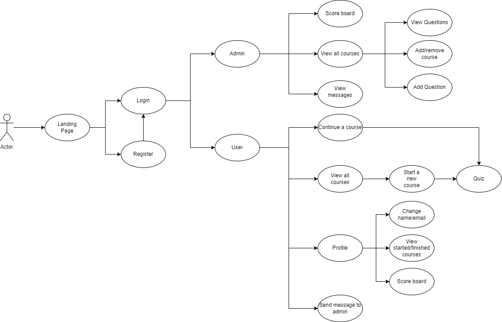
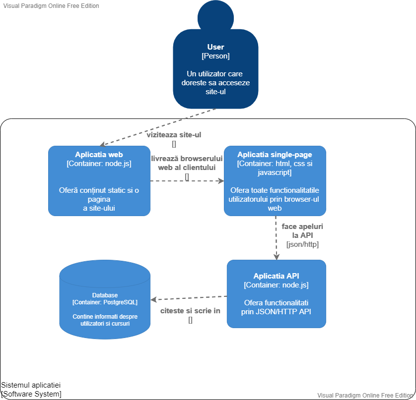
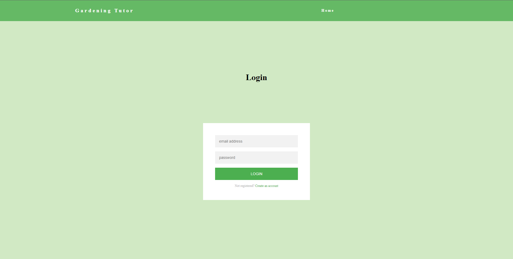
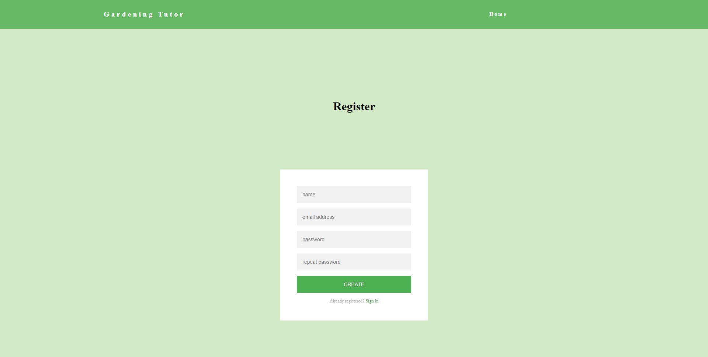
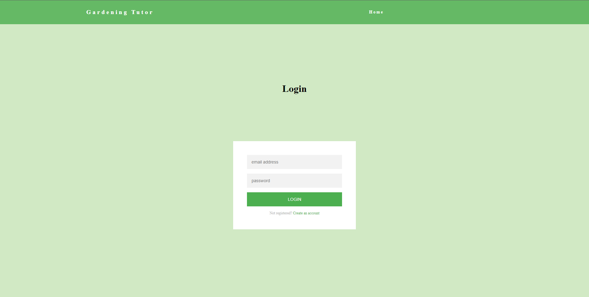
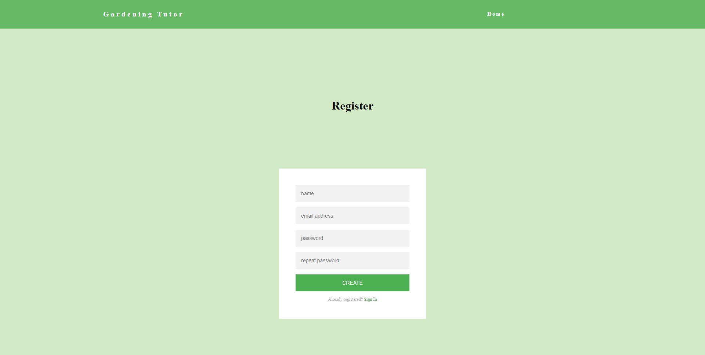

1. Introduction
1.1 Scope
Scopul acestui document este de a prezenta detalii despre site-ul web GarT (Gardening Web Tutor).
Va prezenta caracteristicile site-ului si cum trebuie sa functioneze site-ul. Acest document va
fi folosit de catre primii utilizatori pentru a intelege mai bine site-ul.
1.2 Intended Audience and Reading Suggestions
Acest document este atat pentru developeri cat si pentru utilizatorii site-ului.
Developerii vor putea intelege mai bine cum functioneaza site-ul. Site-ul ar putea
fi folosita de catre urmatoarele categorii de persoane: gradinari incepatori care vor
sa invete sau sa inteleaga unele concepte despre gradinarit si de orice persoana
care doreste sa invete pentru a isi face si intretine propria gradina.
1.3 Product Scope
Scopul site-ului este de a crea un mediu user-friendly de invatare pentru persoanele care
vor sa invete despre gradinarit sau la ce l-ar ajuta o anumita unealta. Acestia vor avea la dispozitie
concepte, unelte si tehnici din care sa aleaga si se vor pune la dispozitie semnificatia/tipul,
contextul de utilizare, sugestii privind momentul propice realizarii unor activitati specifice, etc.
2. Overall Description
2.1 Product prespective
Produsul s-a nascut din dorinta oamenilor de a isi crea gradina in locuinta proprie,
fiind foarte folositor sa existe o platforma care ii ajuta la fiecare pas cu sfaturi,
informatii si explicatii. Cea mai mare realizare a site-ului nostru este ca putem ajuta
orice persoana sa isi construiasca propria gradina de la zero.
2.2 Product Functions
Authentication:
Register
Login
Informatii despre gradinarit precum tipuri de unelte, tehnici, sfaturi, etc
Fiecare utilizator, pe masura ce va progresa va avea un alt punctaj in aplicatie
Va fi un clasament cu utilizatorii ce au progresat cel mai mult
2.3 Operating Environment
Site-ul va functiona pe orice sistem de operare, cat si pe orice browser web.
2.4 Design and Implementation Constraints
Front-End:
HTML
CSS
JavaScript (Pentru preluarea si introducerea datelor din API folosind Fetch API, gestionarea lor si a interfetei)
Back-End:
Node.js (comunicarea dintre front-end si back-end, generarea unui token pentru un utilizator logat folosind pachetul jwtwebtoken si criptarea parolei in baza de date folosind pachetul bcrypt)
PostgreSQL (stocarea datelor)


3. External Interface Requirements
3.1 User Interface
Home Page Interface
 Login Page

Register Page

Login Page

Register Page

3.2 Communications Interfaces
FrontEnd-ul si BackEnd-ul comunica intre ele prin http requests. De exemplu,
frontend-ul va trimite datele introduse catre backend, iar backend-ul va valida
datele si le va stoca in baza de date.
4. System Features
4.1 Register
Descriere si prioritate
Acest feature este unul cu o prioritate mare. Un utilizator care intra pentru
prima data pe site va fi rugat sa se inreistreze. Acesta va trebui sa isi puna numele,
adresa de email si parola. Acesta va trebui sa confirme parola.
Response Sequences List
Utilizatorul va trebui sa introduca informatii neexistente in baza de date.
Daca informatiile sunt deja folosite, va aparea o eroare si ii va cere utilizatorului
sa foloseasca altele.
4.2 Login
Descriere si prioritate
Acest feature este unul cu o prioritate mare. Userul introduce adresa
de email si parola si dupa ce email-ul si parola sunt verificate in baza
noastra de date, acesta va avea acces in cont.
Response Sequences List
User-ul trebuie sa foloseasca emailul si parola folosite la inregistrare
Daca email-ul sau parola nu exista in baza de date o eroare va aparea. Aceasta
ii va cere utilizatorului sa scrie un email sau o parola valide.
4.3 Vizualizare cursuri
Descriere si prioritate
Acest feature este unul cu o prioritate mare. User-ul va putea viziona cursurile
de pe site si va putea raspunde la intrebari legate de acesta.
Response Sequences List
User-ul va putea selecta ce curs doreste din meniul principal dupa ce acesta is face un cont
Daca acesta a inceput un curs si inca nu l-a terminat(nu a raspuns la intrebari) acesta va
aparea pe pagina principala.
4.4 Ranking
Descriere si prioritate
Acest feature este unul cu o prioritate medie. Utilizatorul, pe masura
ce invata si descopera cat mai multe pe site, va creste in rank si totodata in
clasamentul site-ului.
4.5 Edit profile
Descriere si prioritate
Acest feature este unul cu o prioritate mare. Utilizatorul isi va putea schimba
numele sau email-ul, va putea vedea ce cursuri a terminat, sau pe ce loc se afla
in clasament